Caminar juntos como Pueblo de Dios
Más de dos millones y medio de fieles católicos, unidos en la fe desde 1536. ¡Estamos para servirte!
Encuentra una parroquia
Busca por nombre, colonia o municipio y consulta horarios de misa y contacto.
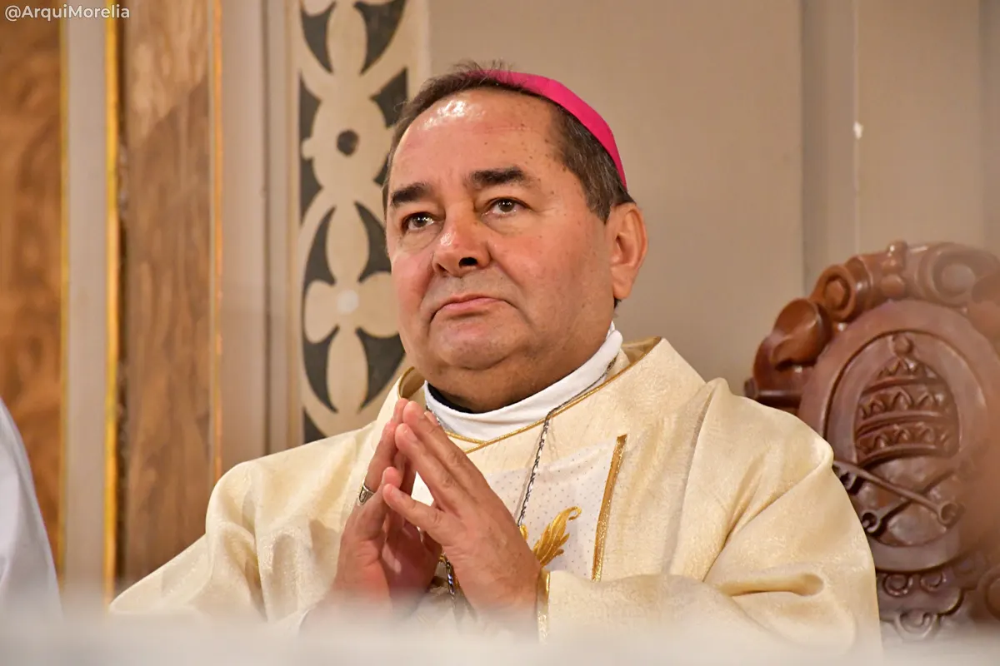
Bienvenidos a la casa de todos
“Por la gracia de Dios y de la Santa Sede Apostólica, les saludo junto a mis hermanos obispos, sacerdotes, religiosas, seminaristas y a los más de dos millones y medio de fieles católicos que conformamos la Arquidiócesis de Morelia. ¡Estamos para servirle!”
Originario de Jiquilpan, Michoacán, fue nombrado Arzobispo de Morelia por Su Santidad el Papa León XIV el 19 de enero de 2026, tras servir como Obispo de Huautla y de Tampico.
Noticias de la Arquidiócesis
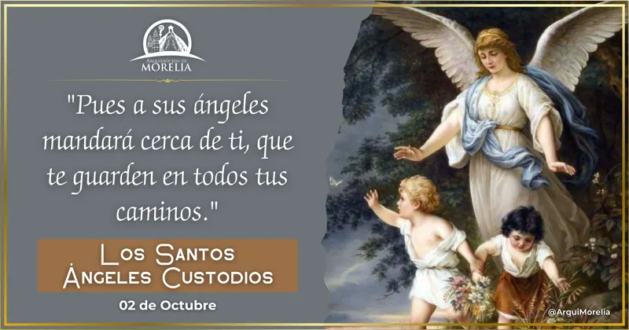
Los Santos Ángeles Custodios
La festividad de los Santos Ángeles Custodios, que se celebra universalmente cada 2 de octubre, rinde homenaje a esos espíritus celestiales y mensajeros de Dios que han sido…
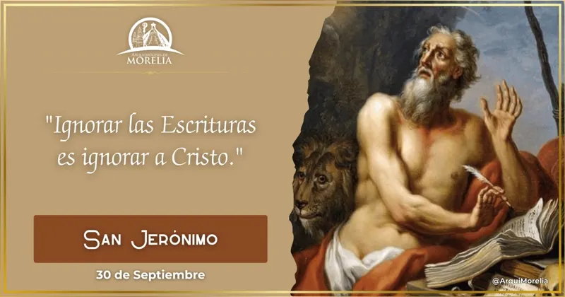
San Jerónimo
Uno de los más grandes doctores de la Iglesia latina y el insigne erudito que tradujo la Biblia al latín, nació en Estrida, en la frontera entre Dalmacia y Panonia, alrededor del…
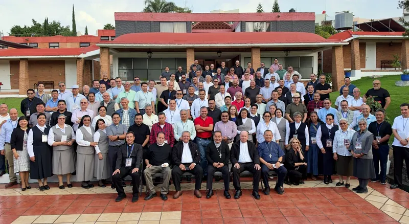
Encuentro Provincial, Provincia Eclesiástica de Morelia
Bajo la guía de +José Armando Álvarez Cano, Arzobispo Metropolitano de Morelia, y con la presencia de los señores Obispos de las Diócesis sufragáneas: +Juan Carlos Arcq Guzmán, de…
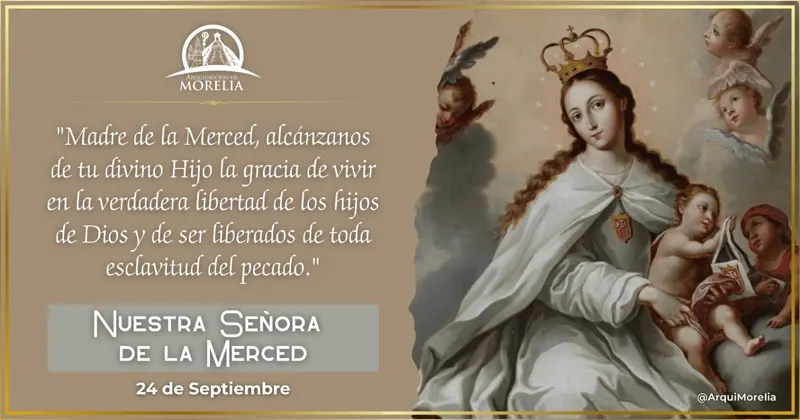
Nuestra Señora de la Merced
La advocación de Nuestra Señora de la Merced (o de las Mercedes), cuya festividad litúrgica se celebra solemnemente cada 24 de septiembre, tiene sus profundas raíces en la España…
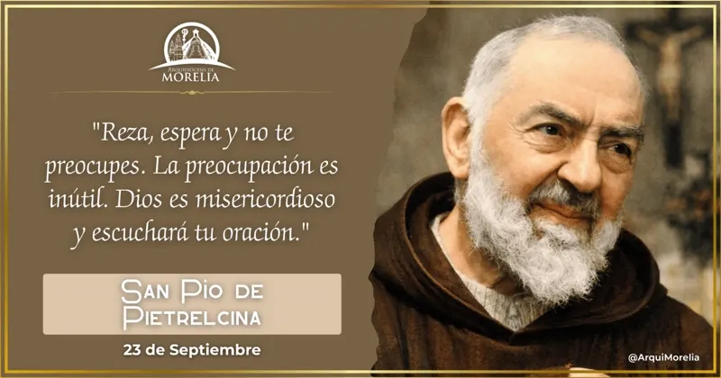
San Pío de Pietrelcina
Cariñosamente conocido en todo el mundo como el Padre Pío, nació bajo el nombre de Francesco Forgione en Pietrelcina, Italia, el 25 de mayo de 1887, en el seno de una familia de…
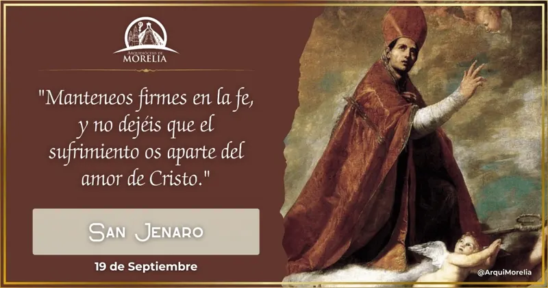
San Jenaro
Obispo de Benevento y uno de los mártires más venerados de la Iglesia católica, nació probablemente en Campania, Italia, en la segunda mitad del siglo III. Durante la feroz…
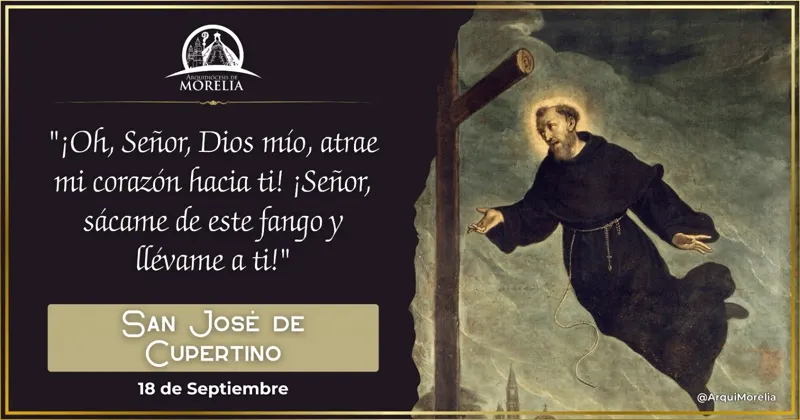
San José de Cupertino
Conocido popularmente como el "santo de los vuelos" debido a los extraordinarios y documentados episodios de levitación que experimentaba al entrar en profundo éxtasis místico,…
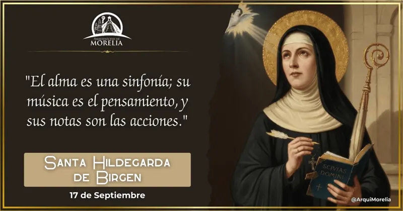
Santa Hildegarda de Bingen
Conocida como la "Sibila del Rin" y una de las mentes más brillantes, prolíficas y fascinantes de la Edad Media, nació en el año 1098 en Bermersheim (Alemania) en el seno de una…
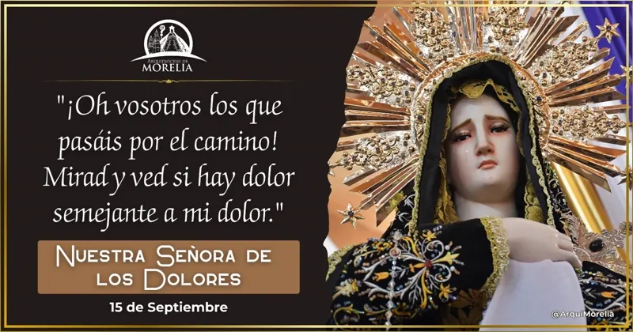
Nuestra Señora de los Dolores
La festividad de Nuestra Señora de los Dolores (también conocida como la Virgen de los Dolores o la Dolorosa), celebrada solemnemente cada 15 de septiembre (justo un día después…
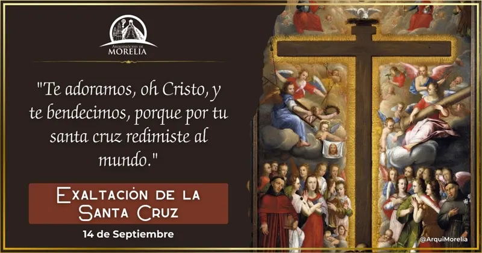
Exaltación de la Santa Cruz
La festividad de la Exaltación de la Santa Cruz, celebrada solemnemente cada 14 de septiembre, conmemora dos acontecimientos históricos y espirituales de gran trascendencia: la…
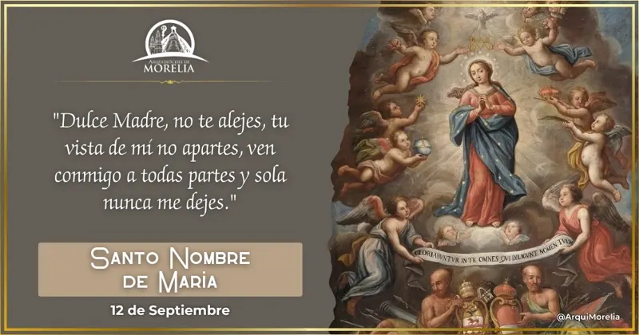
Santo Nombre de María
La festividad del Santo Nombre de María, celebrada solemnemente cada 12 de septiembre, conmemora el profundo significado espiritual, la dignidad y el poder salvífico que encierra…
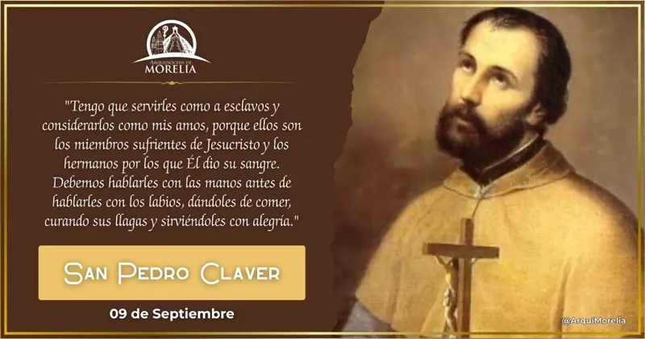
San Pedro Claver
Nacido en Verdú, Cataluña, en 1580, dentro de una familia de modestos agricultores, destacó desde su juventud por una profunda inteligencia y una gran piedad que lo llevaron a…
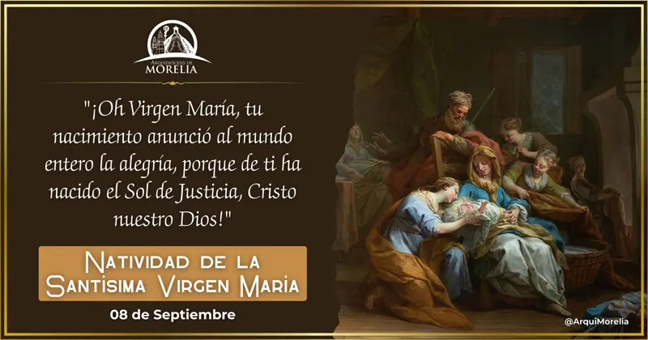
Natividad de la Santísima Virgen María
La festividad de la Natividad de la Santísima Virgen María, celebrada cada 8 de septiembre, conmemora el nacimiento de la Madre de Dios y se erige como uno de los días más…
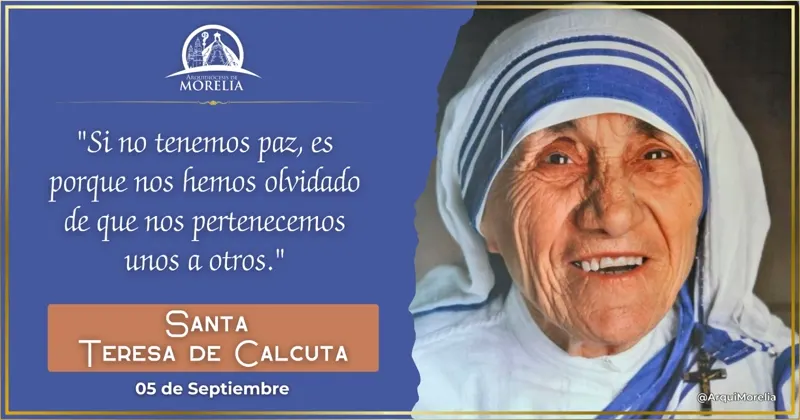
Santa Teresa de Calcuta
Nacida como Anjezë Gonxhe Bojaxhiu en Skopje (actual Macedonia del Norte) en 1910 dentro de una devota familia albanesa, descubrió su vocación misionera desde su temprana…
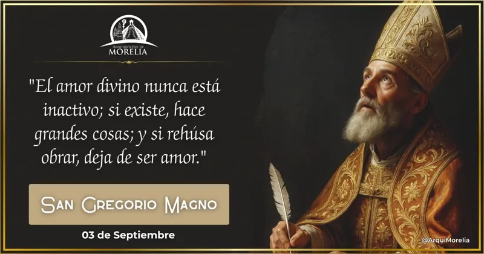
San Gregorio Magno
Nacido en Roma alrededor del año 540 dentro de una familia patricia de gran influencia, comenzó su vida adulta dedicada al servicio público, llegando a desempeñar el prestigioso…
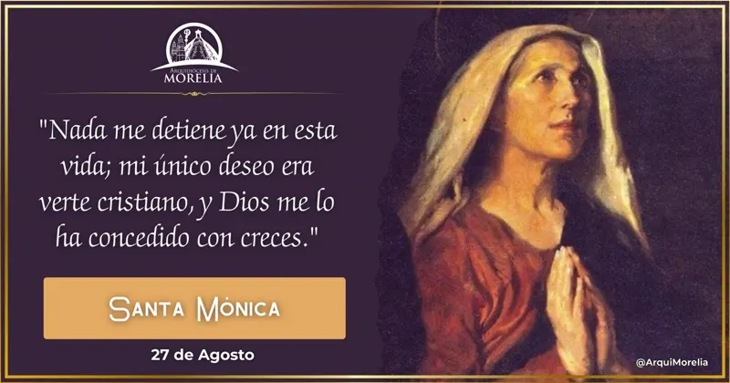
Santa Mónica
Nacida en el año 331 d.C. en la actual Argelia, es patrona de las madres y ejemplo de fe perseverante. Casada con el pagano Patricio, soportó un matrimonio difícil, pero nunca…
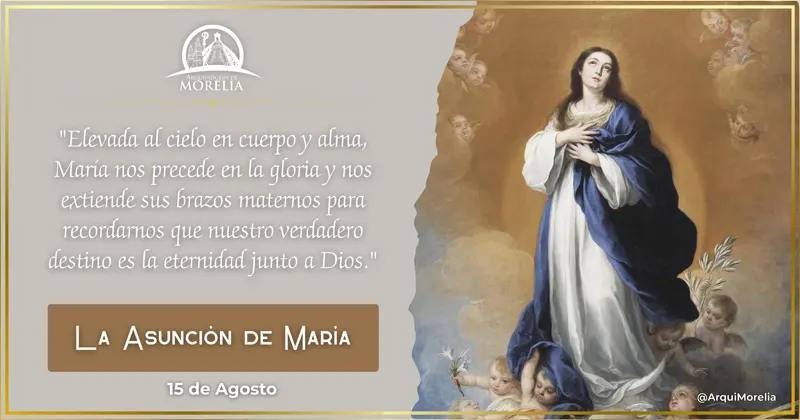
La Asunción de la Virgen María
La Asunción de la Virgen María, cuya solemnidad se celebra cada 15 de agosto, conmemora el momento culminante de la vida terrenal de la Madre de Dios cuando, al finalizar su curso…
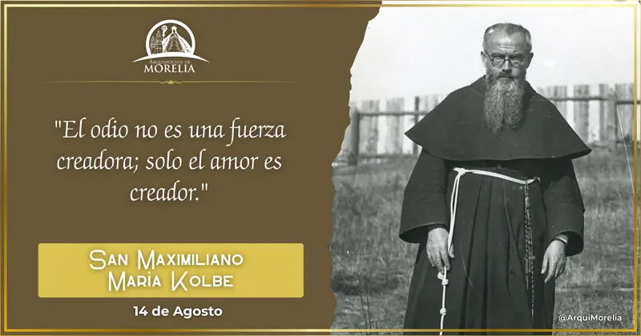
San Maximiliano María Kolbe
Nacido como Rajmund Kolbe en Polonia en 1894, sintió desde su juventud una vocación arrolladora tras una visión de la Virgen María que le ofreció dos coronas: una blanca de pureza…
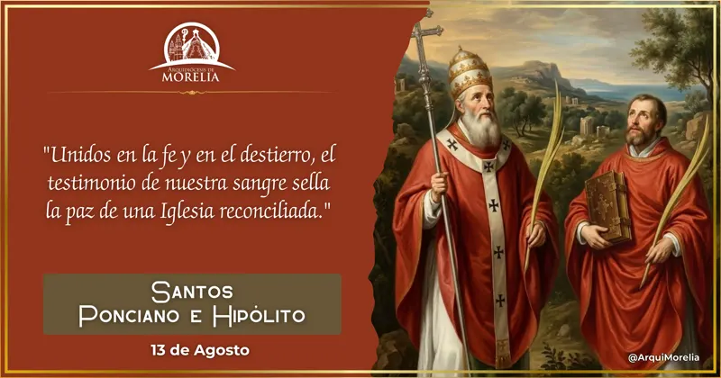
Santos Ponciano e Hipólito
Comparten una festividad litúrgica el 13 de agosto debido a una de las historias de reconciliación más fascinantes de la Iglesia primitiva. Ponciano era el Papa de Roma, un hombre…
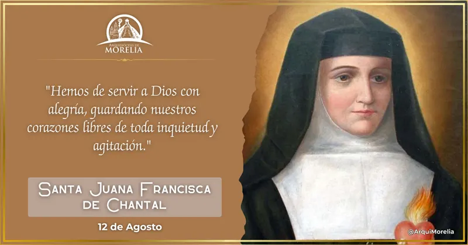
Santa Juana Francisca de Chantal
Nació en Dijon, Francia, en 1572, en el seno de una familia noble y profundamente católica. A los veintiún años contrajo matrimonio con el barón de Chantal, con quien vivió un…
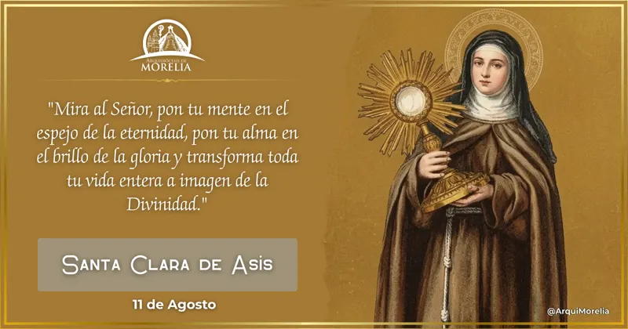
Santa Clara de Asís
Nació en 1194 en el seno de una familia noble y acaudalada de Italia, pero desde muy joven sintió un profundo rechazo por la vanidad mundana y las riquezas materiales, prefiriendo…
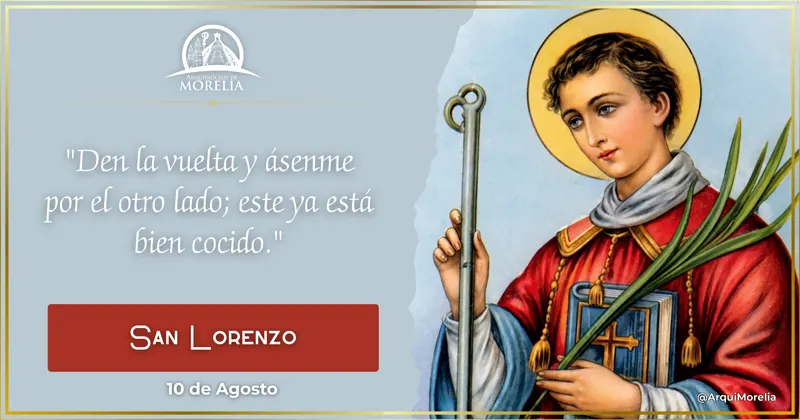
San Lorenzo
Uno de los diáconos más venerados de la Iglesia primitiva, nació en Huesca, España, a principios del siglo III, pero desarrolló su ministerio principal en el corazón de Roma bajo…
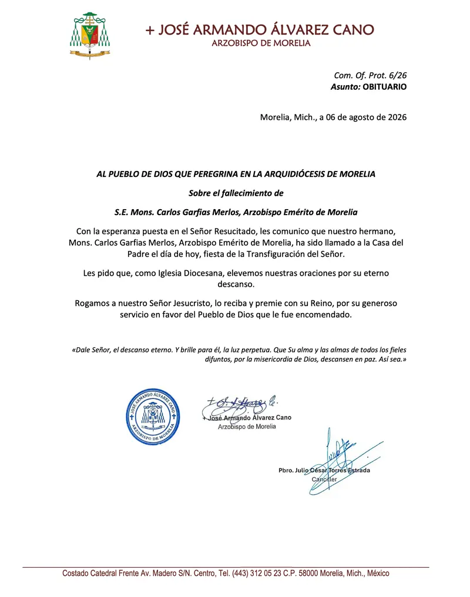
Llamado a la Casa del Padre
"Dale, Señor, el descanso eterno. Y brille para él la luz perpetua. Que su alma y las almas de todos los fieles difuntos, por la misericordia de Dios, descansen en paz. Amén."
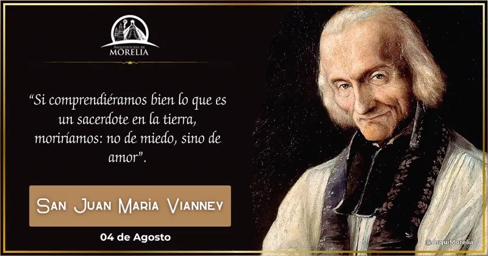
San Juan María Vianney
Celebramos a San Juan María Vianney, el Santo Cura de Ars, pastor que entregó su vida al servicio de Dios y de su pueblo con humildad, oración y una inmensa caridad.
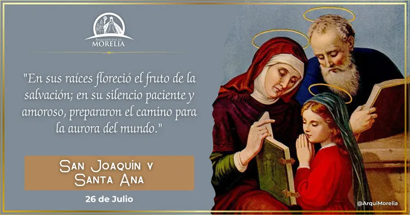
San Joaquín y Santa Ana
Aunque no se mencionan explícitamente en los evangelios canónicos, son venerados desde los primeros siglos de la tradición cristiana como los padres de la Virgen María y, por…
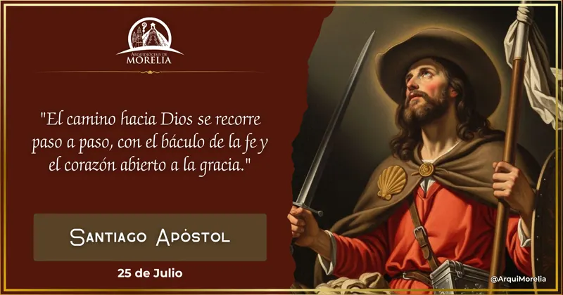
Santiago Apóstol
Conocido como "el Mayor" para distinguirlo del otro discípulo llamado Santiago, era pescador en el Mar de Galilea junto a su hermano Juan y su padre Zebedeo cuando Jesús los llamó…
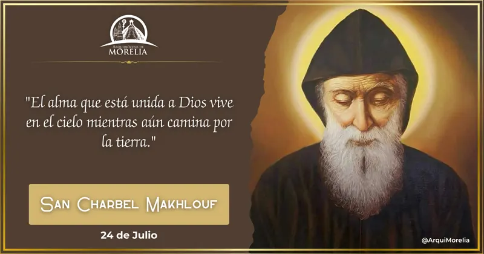
San Charbel Makhlouf
Nació en 1828 en un pequeño pueblo de las montañas de Líbano bajo el nombre de Youssef Antoun Makhlouf, en el seno de una familia campesina profundamente piadosa. Desde su…
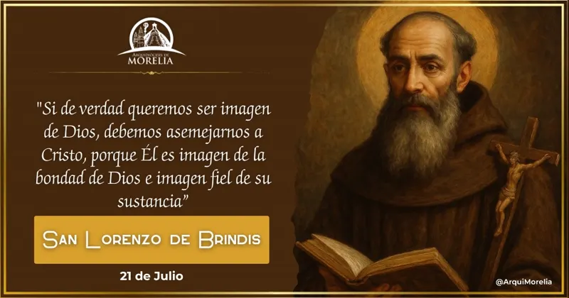
San Lorenzo de Brindis
San Lorenzo de Brindis: Nació en Brindisi, Italia, en 1559 bajo el nombre de Giulio Cesare Russo. Desde muy joven sintió la vocación religiosa e ingresó en la Orden de los…
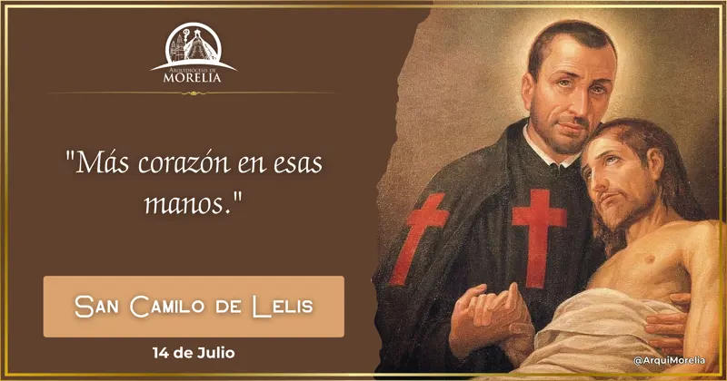
San Camilo de Lelis
Nació en 1550 en el Reino de Nápoles y tuvo una juventud marcada por la impulsividad, los vicios y una carrera militar inestable, durante la cual llegó a perderlo todo en los…
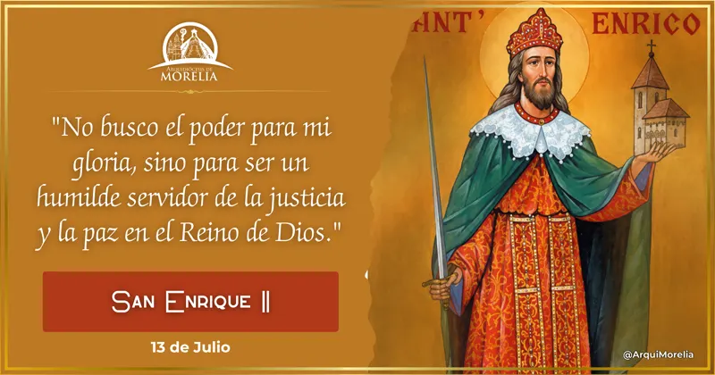
San Enrique II
San Enrique II, emperador del Sacro Imperio Romano Germánico, nació en el año 973 y destacó en la historia medieval por su intento consciente de armonizar el ejercicio del poder…
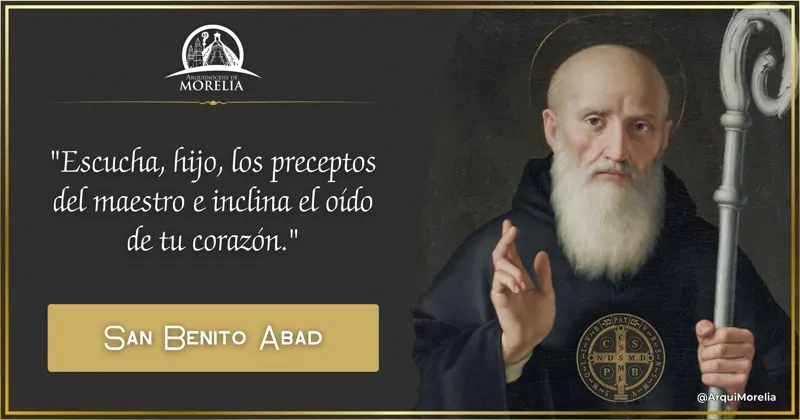
San Benito Abad
Nació en Nursia, Italia, alrededor del año 480, en el seno de una familia noble. Durante sus estudios en Roma, se sintió profundamente perturbado por la frivolidad y la corrupción…
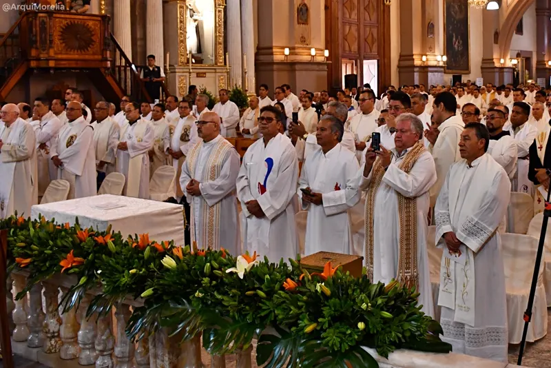
Peregrinación Sacerdotal
El Presbiterio de Morelia celebra el don del sacerdocio y la recepción del palio Arzobispal de +José Armando Álvarez Cano, Arzobispo de Morelia .
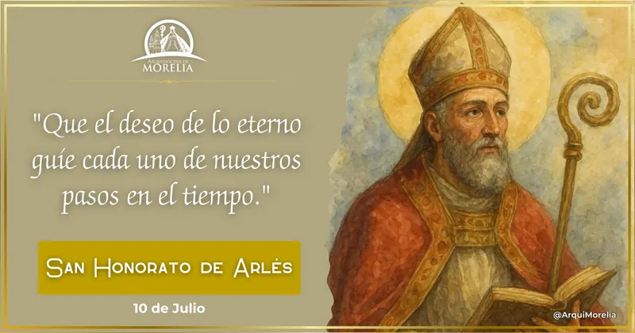
San Honorato de Arlés
Nació en una distinguida familia galorromana, pero desde muy joven sintió un profundo rechazo por la vida mundana y las ambiciones políticas de su clase social. Tras una…
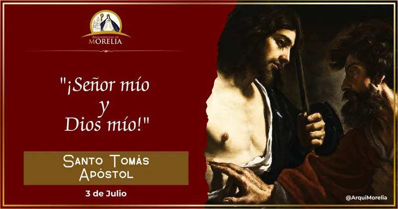
Santo Tomás Apóstol
Santo Tomás, uno de los Doce Apóstoles elegidos por Jesucristo, es recordado por su sinceridad, valentía y profundo deseo de conocer la verdad. La Iglesia celebra su memoria el 3…
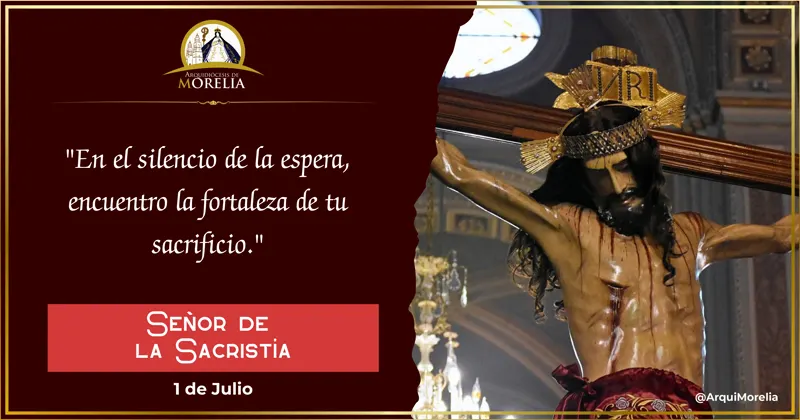
El Señor de la Sacristía
El Señor de la Sacristía es una imagen profundamente venerada en la Catedral de Morelia, cuya presencia es un referente histórico y devocional para los fieles locales. Se trata de…
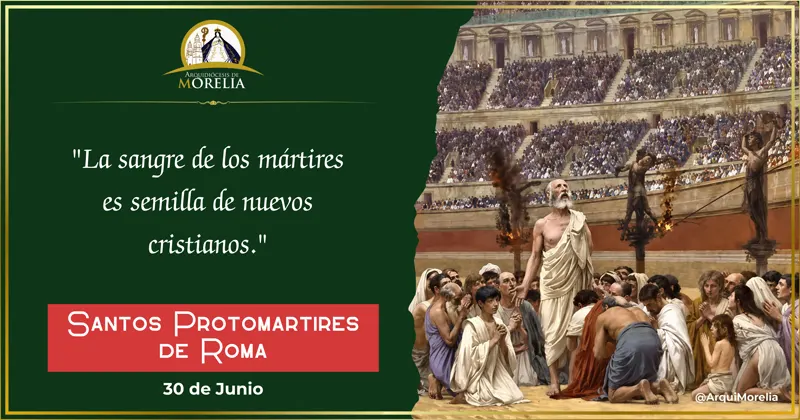
Santos Protomártires de Roma
Los Primeros Mártires de la Iglesia de Roma, también llamados Protomártires, fueron los primeros cristianos perseguidos bajo el emperador Nerón tras el gran incendio que devastó…
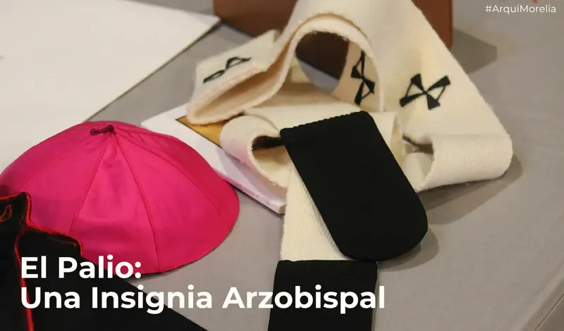
El Sagrado Palio: Signo de Amor y Entrega
El palio es una de las insignias más significativas dentro de la Iglesia católica. Se trata de una estrecha banda de lana blanca, adornada con cruces negras, que los arzobispos…
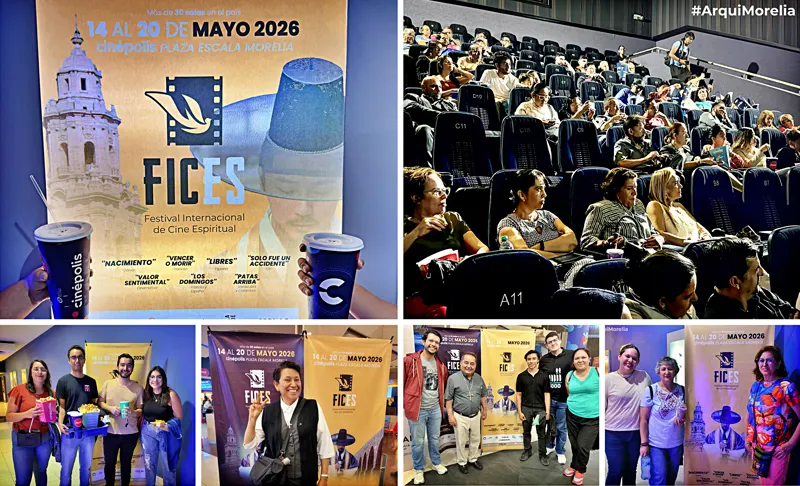
El cine como camino de encuentro y esperanza
Del 14 al 20 de mayo de 2026, la Arquidiócesis de Morelia fue sede del Festival Internacional de Cine Espiritual Morelia 2026 (FICES), un espacio que unió el arte cinematográfico…
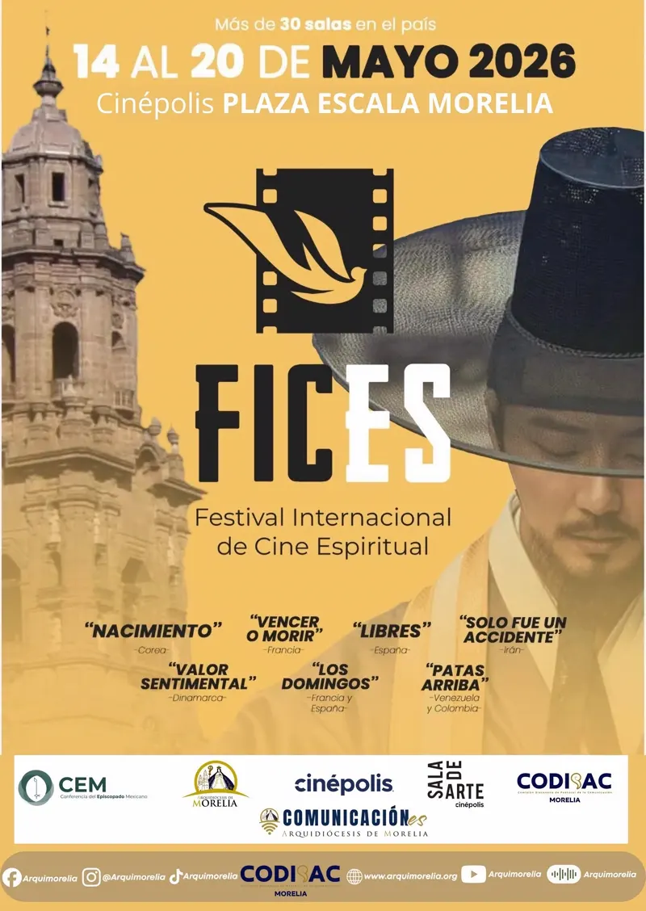
Festival Internacional de Cine Espiritual
El objetivo del FICES no es solo exhibir películas, sino generar espacios de encuentro, reflexión y diálogo, donde el cine se convierta en un puente entre la fe y la cultura,…
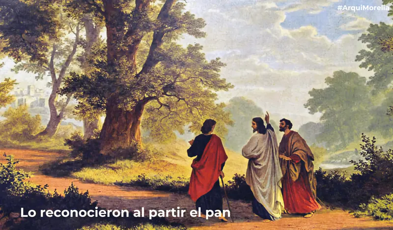
Homilía III Domingo de Pascua - Ciclo A
Hoy hemos escuchado uno de los pasajes más bellos del nuevo testamento, el pasaje de los peregrinos de Emaús, y ellos tenían algo parecido: el dolor, la decepción, la tristeza les…
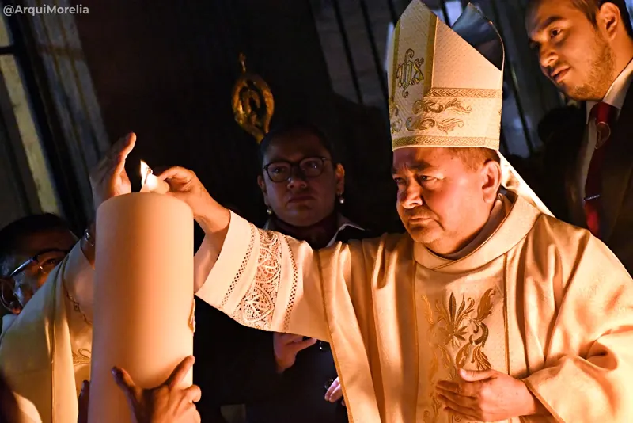
¡Resucitó, resucitó, el Señor, Aleluya!
En la Catedral de Morelia se celebró la Solemne Vigilia Pascual, con la que dio inicio el Tiempo de Pascua, periodo central de la fe cristiana. La celebración fue presidida por…
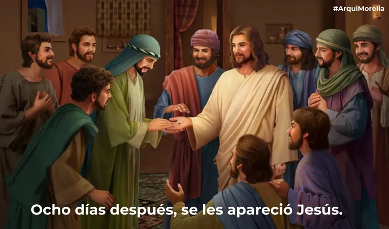
Homilía II Domingo de Pascua - Ciclo A
Queridos hermanos, hoy el evangelio nos presenta a Santo Tomás, aquel Apóstol que dudó de la resurrección del Señor, pero en el fondo todos tenemos algo de Santo Tomás, a veces,…

Homilía Domingo de la Resurrección del Señor - Ciclo A
Queridos hermanos, estamos celebrando la resurrección del Señor y sin duda este acontecimiento vino a abrir los ojos de los discípulos, a que cada cosa que ellos vivieron con él…

Homilía Domingo de Ramos - Ciclo A
Este pasaje que hemos escuchado del evangelio de San Mateo, narra la entrada triunfal de Jesús en Jerusalén, evento que marca el inicio oficial de nuestra Semana Santa. El…
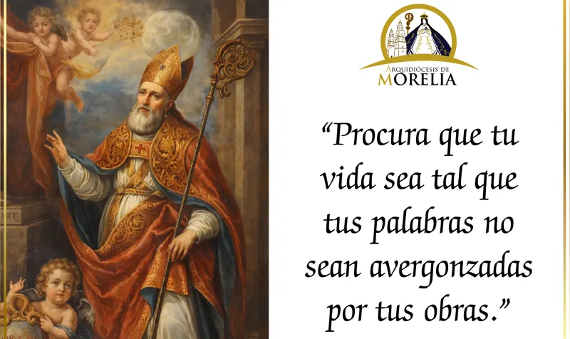
San Braulio de Zaragoza
Fue un destacado obispo, escritor y pastor de la Iglesia en la Hispania visigoda del siglo VII, reconocido por su sabiduría, su amor por el conocimiento y su profunda vida de fe.…
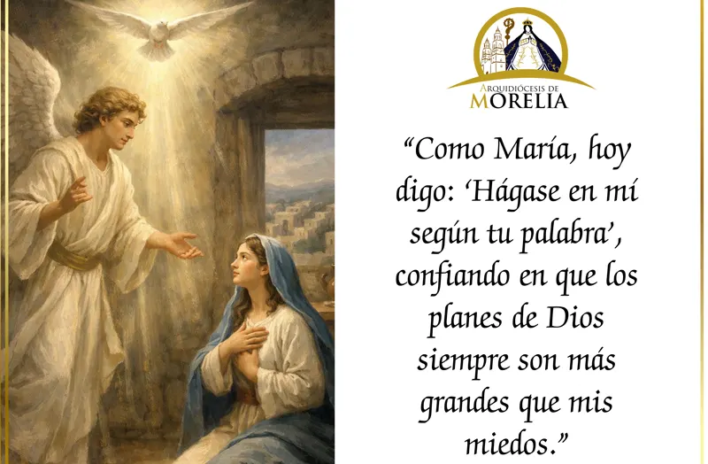
Solemnidad la Anunciación del Señor
La Anunciación del Señor es una de las celebraciones más profundas y llenas de misterio dentro de la Iglesia, pues en ella contemplamos el momento en que Dios entra de manera…
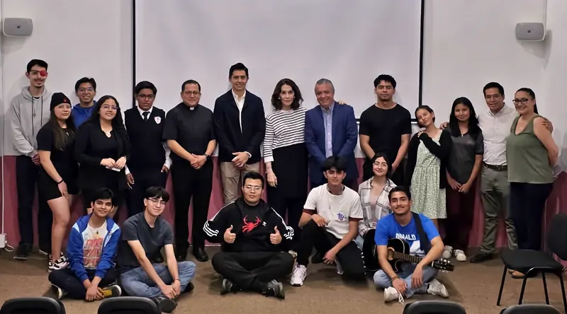
Remodelación del auditorio de la rectoría de Cristo Rey
La Rectoría de Cristo Rey celebró la inauguración del renovado Auditorio C.P. Jaime Ramírez Villalón. Más que una mejora en la infraestructura, este espacio representa un refugio…
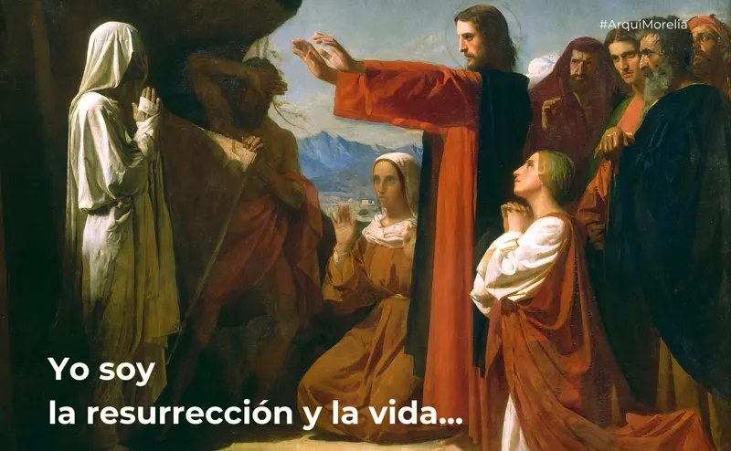
Homilía V Domingo de Cuaresma - Ciclo A
Queridos hermanos, la resurrección de Lázaro, revela a Jesús como la resurrección y la vida, demostrando su poder divino sobre la muerte.
Visita pastoral en la Zona II “San Bernabé de Jesús Méndez Montoya”, Morelia, Mich.
La Zona II “San Bernabé de Jesús Méndez Montoya” recibió la visita pastoral de nuestro Excelentísimo Señor Arzobispo, Mons. José Armando Álvarez Cano.
Homilía IV Domingo de Cuaresma - Ciclo A
Queridos hermanos, con frecuencia se realiza en nuestras parroquias los llamados retiros espirituales, distintos movimientos y grupos apostólicos acostumbran hacer estas…
Mensaje de Cuaresma 2026
El señor nos invita a que escuchemos más a Dios, a que tomemos su palabra como base, pero también a que escuchemos los gritos de nuestros hermanos necesitados. Es importante…
Rueda de prensa, domingo 15 de marzo 2026
"El itinerario cuaresmal se convierte en una ocasión propicia para escuchar la voz del Señor y renovar la decisión de seguir a Cristo, recorriendo con Él el camino que sube a…
Visita Pastoral Zona I "Sagrado Corazón de Jesús", Morelia, Mich.
Mons. José Armando Álvarez Cano, realizó recientemente una visita pastoral a la Zona 1 “Sagrado Corazón de Jesús” de la Arquidiócesis de Morelia, con el propósito de escuchar de…
Visita Pastoral Zona III "María Inmaculada de la Salud", Pátzcuaro, Mich.
El martes 3 de marzo se llevó a cabo el encuentro con los sacerdotes de la Zona III María Inmaculada de la Salud. La reunión tuvo lugar en la ciudad de Pátzcuaro y se vivió como…
Visita Pastoral Zona IV Nuestra Señora de la Luz.
Con el objetivo de fortalecer un proceso de escucha, cercanía y diálogo pastoral, +José Armando Álvarez Cano, Arzobispo de Morelia, ha dado inicio a una serie de visitas a las…
Oración Unida 2024: "Un corazón por México
Líderes religiosos de distintas Congregaciones de fe se reunieron en Morelia para elevar juntos un clamor al Cielo.
Congreso Nacional EPA, Morelia 2024
El movimiento EPA, por sus siglas: “Encuentros Para Adolescentes”, genera espacios de encuentro y amistad con Cristo y con otros jóvenes de la edad que, compartiendo las mismas…
Encuentro Nacional del Ordo Virginum, Morelia 2024
Con el objetivo de “Reavivar, desde el Magisterio de la Iglesia, nuestro ser de Mujeres Consagradas del Ordo Virginum”, se llevó a cabo el 21 Encuentro Nacional del Ordo Virginum,…
Nuevo Obispo de Ciudad Guzmán
Monseñor Herculano Medina Garfias es el Quinto Obispo de la Diócesis de Ciudad Guzmán, en el Estado de Jalisco, México.
Clausura del Año Mariano Diocesano
Lunes 8 de Julio 2024. Se celebró la Clausura del "Año Mariano Diocesano" en la Basílica de Santa María Inmaculada de la Salud, en Pátzcuaro.
La Preciosa Sangre que nos salva
Así se celebra a la Preciosa Sangre de Nuestro Señor Jesucristo en la Arquidiócesis de Morelia
Oración a San Bernabé de Jesús por los sacerdotes
guarda a tus sacerdotes en el recinto sacro de tu corazón donde nada ni nadie pueda hacerles daño alguno.
Semana Nacional de Iniciación a la Vida Cristiana / Morelia 2024
Más de 600 participantes, entre obispos, sacerdotes, religiosas, religiosos y laicos coordinadores del área catequética de diversas diócesis de todo el país, participaron en la…
San Bernabé de Jesús, un Santo Mártir Michoacano
San Bernabé de Jesús Méndez Montoya (quien era conocido sencillamente como “el Padre Méndez”) es el primer fiel de nuestra Arquidiócesis en llegar a los altares de la Iglesia…
Seis nuevos sacerdotes
En una solemne celebración Eucarística presidida por +Carlos Garfias Merlos, Arzobispo de Morelia, serán ordenados seis jóvenes en la Catedral de Morelia este jueves 23 de mayo…
Colectivo Michoacán Humanitario celebra cuatro años de trabajo
El Colectivo “Michoacán Humanitario, Responsable y Solidario”, celebró su cuarto aniversario de trabajo en beneficio de lo sectores más vulnerables de nuestro estado.
Comuniquen su propia experiencia de Cristo
“Preocúpense por hacer que los niños, adolescentes, jóvenes y las familias reciban el mensaje del Evangelio a través de los medios de comunicación que están dispuestos en las…
Una contienda electoral en paz
Con la esperanza de que la contienda electoral que actualmente se desarrolla en el país, donde el próximo 2 de junio se elegirá Presidente de la República y más cargos de elección…
Mensaje de Cuaresma 2024
Les saludo con mucho cariño y afecto en este tiempo de cuaresma, tiempo especial de gracia. Les invito durante la cuaresma a disponer la mente y abrir las puertas del corazón para…
Mensaje de Navidad 2023
A TODA LA COMUNIDAD DE LA ARQUIDIÓCESIS DE MORELIA Y A LOS HOMBRES Y MUJERES DE BUENA VOLUNTAD:
Cielo Abierto Morelia 2023
La Misión Cielo Abierto por segunda vez llega a #Morelia. Ven y juntos demos testimonio de Fe y Adoración al Santísimo Sacramento.
Los Centros de Escucha
Los Centros de Escucha son un espacio físico y humano de acompañamiento integral a quien haya sido víctima de las violencias o sean vulnerables a padecerlas.
Encuentro Nacional de Laicos: Morelia 2023
Por invitación de la Dimensión Episcopal de Laicos, de la Conferencia del Episcopado Mexicano, se CONVOCA a todos los Laicos de todo México, para estudiar, orar, celebrar la fe y…
Niños de la Ópera de Berlín en Morelia
La Arquidiócesis de Morelia en conjunto con la Universidad Vasco de Quiroga, Conservatorio de las Rosas y el Consejo Michoacano para la Construcción de la Paz y la Reconciliación,…
Joselito Sánchez del Río: el niño mártir michoacano
Se trata de un caso conmovedor, verdaderamente singular entre los mártires que regaló La Cristiada a México y a la Iglesia.
Los soldados “también son parte del pueblo y de la Iglesia
Sacerdotes que conforman la Pastoral Castrense en distintas Diócesis del país se reunieron en Morelia del 22 al 25 de agosto pasado para sostener su XIX Encuentro Nacional, junto…
Memorable XVI CONAJUM
Los días jueves 10 a domingo 13 de agosto 2023, se llevó a cabo, en el Palacio del Arte, de Morelia, el XIV Congreso Nacional Juvenil Misionero (CONAJUM), con la participación de…
Serán Ordenados
En una solemne celebración Eucarística presidida por +Carlos Garfias Merlos, Arzobispo de Morelia, serán ordenados siete jóvenes en la Catedral de Morelia este jueves 28 de…
Pastoral Penitenciaria en Morelia
Presenta Plan de trabajo esta importante Pastoral que la Arquidiócesis de Morelia brinda como acompañamiento desde hace muchos años
Encuentro Diocesano de Catequistas 2023
Más de 4 mil catequistas de diverso lugares de la Arquidiócesis de Morelia, participaron el pasado domingo 10 de septiembre en el XVII Encuentro Diocesano, el cual se realizó en…
Apertura del Año Jubilar Mariano en Pátzcuaro
100 años del Patrocinio de Nuestra Señora de la Salud y 100 años de ser elevado su Santuario de Pátzcuaro a Basílica Menor
Visita Ad Limina Apostolorum 2023
Del domingo 28 de mayo al viernes 2 de junio, el “Grupo Dos” de los Obispos de México realizó la visita “Ad Limina Apostolorum”, y aunque la visita inició formalmente el lunes 29…
HOMILÍA: La Ascención del Señor
“Sepan que yo estoy con ustedes todo los días hasta el fin de los tiempos” (Mt. 28, 16- 20).
Mensaje de la 58ª Asamblea Nacional de la CIRM / Morelia 2023
Ensanchar el espacio de nuestra tienda para vivir nuestra identidad sinodal eclesial es el sueño que ha movilizado a la Vida Religiosa en esta LVIII Asamblea Nacional.
Dar al Niño amor y dedicación
Queridos amigos: La paz y la alegría de Cristo, nuestro Buen Pastor Resucitado, esté con todos ustedes en este IV Domingo de Pascua.
Homilía 3er Domingo de Pascua / Ciclo A
El mismo día de la Resurrección, nos encontramos con dos discípulos que regresan tristes y desconsolados a su aldea, Emaús. Caminan apesadumbrados y discuten por el camino. Esta…
Homilía en el Domingo de la Misericordia
El hecho de que Jesús entre al lugar estando cerradas las puertas quiere decir que ahora vive una nueva Vida. Su Cuerpo glorificado tiene unas facultades especiales, “los muros”…
Mensaje de Pascua 2023
Les saludo a todos con mucho cariño y alegría, en Cristo nuestra Paz, deseándoles unas ¡Felices Pascuas de Resurrección!
Homilía de Pascua / Ciclo A
La Resurrección es la transformación por excelencia; ahí es donde Dios convierte la muerte en vida, la sombra en luz, el miedo en confianza y la tristeza en gozo. La Resurrección…
Rompe récord la Procesión del Silencio en Morelia
Más de 60 mil personas presenciaron este evento religioso en un ambiente de total respeto, silencio y solemnidad
HOMILÍA en el Domingo de Ramos 2023
Hay personas que cuando les preguntamos cómo se sienten, tienden a contestar: “Tengo sentimientos encontrados; me siento alegre y triste…” Hoy esta celebración tiene la misma…
Semana Santa: estar con Dios
Estando a la puerta la Semana Santa, y sabiendo que serán muchos quienes saldrán a vivirla en algún lugar, ya sea dentro o fuera de la Arquidiócesis, la Dimensión Diocesana de…
El Señor de Araró
Cada año, en el segundo viernes de Cuaresma, cientos de peregrinos de Michoacán y otros estados del país visitan, agradecidos y con entera fe, el Santuario del Señor de Araró.
HOMILÍA 5to Domingo de Cuaresma / Ciclo A
Ante el cadáver frío de un ser querido, enmudecemos... Es indescriptible mirar inerte a quien tanto se quiso. El misterio de la muerte nos arrebata y nos interroga. Cuando muere…
HOMILÍA 4to Domingo de Cuaresma / Ciclo A
El hombre que se llama Jesús hizo lodo, me lo puso en los ojos y me dijo: “ve a Siloé y lávate”. Entonces fui, me lavé y comencé a ver (Jn 9, 11).
HOMILÍA 1er Domingo de Cuaresma
Las bellísimas primeras páginas de la Biblia tratan de responder a las preguntas fundamentales que todo hombre se hace: ¿por qué estoy aquí? ¿De dónde proviene el mal? ¿Qué hay…
Mensaje de Cuaresma 2023
Les saludo con mucho cariño en Cristo, nuestra paz, en este tiempo especial de gracia. Iniciamos el tiempo de la cuaresma, tiempo previsto para preparar a todo el Pueblo de Dios…
Cuaresma: Tiempo de conversión
Les saludo con mucha alegría en Cristo nuestra paz en este VII Domingo del Tiempo Ordinario. El Evangelio de hoy nos llama a una actitud nueva ante el enemigo para eliminar en el…
HOMILÍA 7o Domingo del TO / Ciclo A
Cuando un árbol es joven, es recomendable ponerle un palito para que lo haga crecer derecho. De ahí el proverbio popular que dice: “árbol que crece torcido, jamás su tronco…
HOMILÍA 6to Domingo del T.O. / Ciclo A
La gente se ha quedado boquiabierta ante la proclamación de las Bienaventuranzas hecha por Jesús (Mt 5, 1-12). La felicidad, la dicha que Jesús muestra tiene alcances insólitos,…
Ser amigos de Jesús
Les saludo con mucha alegría en Cristo Nuestra Paz en este VI Domingo del Tiempo Ordinario. En el Evangelio de hoy descubrimos un cristianismo más humano y evangélico, se nos…
Firmes en el seguimiento de Cristo
Los saludo con mucha alegría en Cristo Nuestra Paz en este V Domingo del Tiempo Ordinario. En el Evangelio de hoy, Jesús da a conocer con dos imágenes audaces y sorprendentes lo…
Peregrinación al Cubilete 2023
Bajo el lema “Nuestro Testimonio da Esperanza para la Paz”, se llevó a cabo la Peregrinación Nacional Juvenil a Cristo Rey en el Cerro del Cubilete, en el que miles de…
HOMILÍA 5to Domingo del T.O. / Ciclo A
Nuestro mundo se caracteriza por la pérdida de valores. Es muy común oír decir que hay crisis en todos los ámbitos de la vida: en la economía, la política, la educación, la…
HOMILÍA 4to Domingo del T.O. / Ciclo A
¡Qué bello es contemplar a las personas que experimentan un gozo inmenso!, manifestado con lágrimas o una expresión de gran emoción o sorpresa cuando han recibido una noticia muy…
Jornada Mundial de la Vida Consagrada 2023
Les saludo con mucha alegría en Cristo nuestra paz en este IV Domingo del Tiempo Ordinario. El Evangelio de hoy nos presenta las Bienaventuranzas, que nos indican el espíritu que…
Más de 50 mil asistentes en la Cabalgata de los Reyes Magos
Luego de que Melchor, Gaspar y Baltasar hicieran su 24ª Cabalgata en la ciudad de Morelia, autoridades al interior del Ayuntamiento de Morelia informaron que hubo, aproximadamente…
Convivencia sacerdotal 2023
Cientos de sacerdotes diocesanos y religiosos de toda la Arquidiócesis de Morelia se reunieron el pasado lunes 9 de enero en el Seminario Diocesano para convivir fraternalmente,…
HOMILÍA 2do Domingo del T.O. / Ciclo A
En este testimonio de Juan el Bautista queremos ofrecer el nuestro. Juan advierte que al ser alcanzado por Jesús se transforma todo en Él desde su interior (Jn 1,34). Al tomar…
La Palabra se hizo carne
“No teman. Les traigo una buena noticia: hoy les ha nacido…, en la ciudad de David, un Salvador…” con estas palabras el ángel anuncia a los pastores el nacimiento del Hijo de…
Un niño nos ha nacido" (Is 9,5)
A toda la comunidad de la Arquidiócesis de Morelia y a los hombres y mujeres de buena voluntad: Les saludo a todos con mucho afecto y cariño, deseando que la Paz del Niño…
Día del Seminario 2022
Con mucha alegría celebramos el IV Domingo de Adviento, a todos ustedes les deseo la paz del “Emmanuel”, que ya viene. Hoy se nos invita a adentrarnos a ese Misterio que nos rodea…
Homilía IV Domingo de Adviento - Ciclo A
En la actualidad, ante la deformación de la Navidad, ¿podemos redescubrir la presencia de Dios en medio de nuestro mundo tan convulsionado y desdibujado?
Concurrida, ordenada y fructuosa XII Asamblea Diocesana
“Que el diálogo, el estudio, la reflexión y la oración que hemos hecho en esta Asamblea sean caminos para caminar juntos, sinodalmente, y mejorar nuestro servicio y asumir nuevos…
Coronación Diocesana de la Virgen, en Rincón de Dolores
El Sr. Arzobispo de Morelia +Carlos Garfias Merlos realizó la Coronación Diocesana de la imagen patronal de la Parroquia de Nuestra Señora de los Dolores, de Rincón de Dolores…
Encuentro Nacional de Pastoral Familiar, Morelia 2022
La Dimensión Episcopal de Pastoral Familiar, de la Conferencia del Episcopado Mexicano, congregó del jueves 16 al domingo 20 del presente a sacerdotes, matrimonios responsables,…
Trámites y sacramentos
Consulta los requisitos generales antes de acudir a tu parroquia. Cada comunidad te orientará sobre fechas, pláticas y pagos.
Una Iglesia en salida
Dimensiones que animan, orientan y articulan la acción evangelizadora en comunión con el Plan Diocesano de Pastoral.
Vicaría de Pastoral
Es el delegado por el Arzobispo para dirigir y coordinar en su nombre, estrecha y lealmente vinculado a él,…
Pastoral Profética
Es el sacerdote delegado por el Arzobispo para animar, orientar y articular las acciones evangelizadoras en…
Liturgia
Sacerdote delegado por el Arzobispo para animar, orientar y articular las acciones litúrgicas en la…
Pastoral Social
Sacerdote delegado por el Arzobispo para animar, orientar y articular las acciones de la Iglesia en favor de…
Familia, Juventud, Laicos y Vida
Sacerdote delegado por el Arzobispo para animar, orientar y articular las acciones evangelizadoras en estos…
Pastoral de Comunicación
Es un sacerdote PASTOR–COMUNICADOR, cuya misión es orientar, integrar y acompañar el trabajo de los equipos…
Pastoral de Pastores
Es el Presbítero delegado por el Arzobispo que se encarga de promover la atención y la formación integral,…

La obra de Don Vasco
El Papa Paulo III erigió la Diócesis de Michoacán el 8 de agosto de 1536 con la bula Illius fulciti praesidio, convirtiéndose en la cuarta Diócesis más antigua de México. El mismo día, fue designado…
Nuestra historia
María Inmaculada de la Salud
Recién nombrado como primer Obispo de Michoacán, Don Vasco de Quiroga mandó fabricar a unos religiosos franciscanos y a unos indígenas una imagen de María Santísima con la técnica utilizada por los…
Santos patronesAgenda y medios
Tiempo de Pascua
Celebremos juntos el Tiempo de Pascua. Consulta la agenda para más celebraciones, retiros y actividades comunitarias.
DetallesEscucha la reflexión diaria
Reflexión diaria y homilía dominical de Mons. Álvarez, ahora también en audio.
Tu generosidad sostiene la misión
Con tu aportación apoyas la evangelización, la formación de sacerdotes y la atención a los más necesitados en toda la Arquidiócesis.